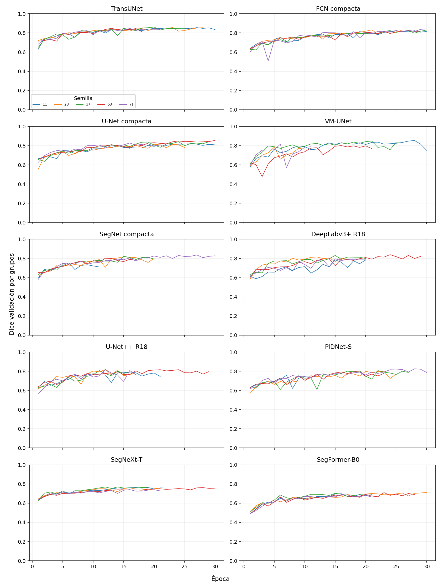
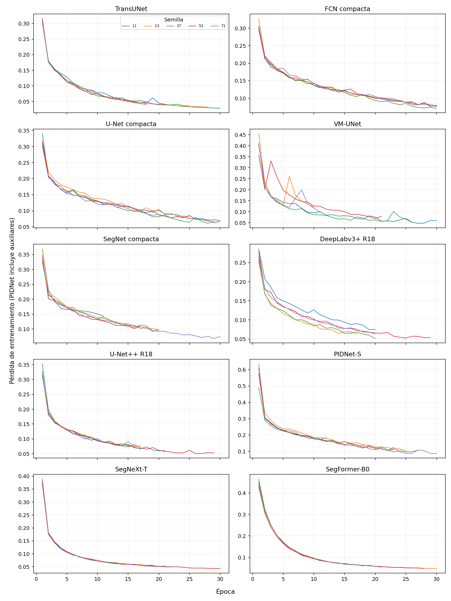

Diseño experimental y ruta de segmentación E2#
Pregunta, estimando y alcance#
Se estudia segmentación semántica binaria de rótulos: una imagen RGB produce un logit por píxel; no se distingue la clase IMO ni la identidad de cada instancia. La ruta aplicable es F4b, SG1–SG7 de la guía. Las rutas de regresión temporal, espacial y de lenguaje no aplican. La posición espacial de los píxeles no convierte esta tarea en regresión geográfica.
Sean \(p_\theta(x)=\sigma(f_\theta(x))\) y \(v\) la máscara de píxeles válidos. El riesgo esperado es \(R(\theta)=\mathbb E[L(p_\theta(X),Y;v)]\). Los pesos minimizan el riesgo empírico en entrenamiento. El test estima desempeño de los checkpoints fijados, no se usa para minimizar pérdidas ni elegir umbral. El riesgo basado en la pérdida y el Dice de evaluación son objetos diferentes.
La métrica primaria heredada es Dice de etiqueta, promediado primero por imagen dentro de cada grupo de similitud, después por grupo con igual peso y finalmente por las cinco semillas. IoU de etiqueta, mIoU etiqueta/fondo y exactitud válida son secundarias. Se conserva δ = 0,02 Dice absoluto, propuesto en E1 como umbral de trabajo académico; no es un umbral de seguridad portuaria validado.
Preguntas e hipótesis#
Pregunta |
Hipótesis / criterio |
Estado temporal y respuesta posible |
|---|---|---|
RQ1. ¿TransUNet mejora el Dice frente a la FCN de referencia? |
Diferencia media Δ; H0: Δ=0 frente a Δ≠0; α=0,05. Para mejora práctica, exigir evidencia por encima de δ=0,02. |
Contraste principal fijado después de validación y antes de test; no preregistrado antes del entrenamiento. IC pareado de grupos cerrado. Las pruebas añadidas posteriormente son exploratorias. |
RQ2. ¿Existen diferencias entre las diez adaptaciones bajo la receta aplicada? |
H0 global de rangos intercambiables; Friedman y post-hoc. Nueve contrastes contra FCN, Holm por procedimiento, α=0,05. |
Exploratoria posterior al test. Condicional a cinco semillas y una partición; no afirma diferencias universales entre familias. |
RQ3. ¿Una alternativa de menor tamaño conserva desempeño dentro de ±0,02 respecto de TransUNet? |
H0 de no equivalencia: Δ≤−0,02 o Δ≥0,02; H1: −0,02<Δ<0,02. Se requiere TOST o intervalo equivalente apropiado. |
Pregunta exploratoria; Pareto describe tamaño/desempeño. TOST pareado por grupos (t y bootstrap, α = 0,05, Holm sobre nueve contrastes), ejecutado después del test: ninguna red es equivalente a TransUNet ( |
RQ4. ¿El área anotada se asocia con dificultad compartida? |
Describir Dice por cuartiles de área definidos en train e IC por grupos. |
Exploratoria, sin declaración causal ni prueba confirmatoria. Permite proponer un experimento futuro sobre resolución/bordes. |
La familia de nueve contrastes añadida en esta integración se declara ahora. No se presenta como decisión anterior al test. La hipótesis futura de E3 debe validarse en una evaluación independiente y no ajustando el modelo al test ya visto.
Datos, contrato y trazabilidad#
Se heredan las particiones del E1: 1.015 imágenes/567 grupos en train; 218/122 en validación; 218/122 en test. Otras 132 imágenes permanecen en cuarentena y 102 no tienen máscara utilizable. Los originales se conservan intactos. Ver el capítulo de datos y EDA para procedencia y límites de licencia.
Campo del contrato |
Regla aplicada |
Evidencia |
|---|---|---|
ID y grupo |
ID único; cada grupo pertenece a una sola partición |
Manifiestos |
Imagen |
RGB; integridad SHA-256; geometría compartida con máscara |
|
Objetivo derivado |
Valores 0/1; unión de categorías anotadas |
|
Entrada |
Letterbox a 256×256; imagen bilineal y máscara vecino más cercano |
|
Zona válida |
Excluir padding en pérdida y métricas; no inferir que el relleno es fondo observado |
|
Normalización |
Media [0,604051; 0,560752; 0,507238], DE [0,232527; 0,226602; 0,239677], calculadas solo en train |
|
Orden y sellado |
Orden de test y hashes de los 50 checkpoints fijados antes de evaluación E2 |
|
El EDA global y el test del E1 ya se habían observado. Por tanto, este test es reservado para la selección de checkpoints de E2, pero no es un holdout históricamente virgen. Los grupos proceden de similitud visual, no de identificadores certificados de escena. Cero enlaces conocidos entre particiones no prueba independencia absoluta ni ausencia de todos los duplicados posibles.
Receta realmente ejecutada#
Componente |
Valor |
|---|---|
Modelos y familias |
Diez: siete CNN, un Transformer, un híbrido CNN–Transformer y un SSM |
Aceptación docente del número |
El usuario confirmó el 19/11 que el profesor acepta 3 del E1 + 7 nuevos; no se infiere aprobación de otros requisitos |
Inicialización |
Aleatoria para las diez redes; sin pesos externos |
Semillas |
11, 23, 37, 53, 71; Python, NumPy y PyTorch |
Resolución / batch |
256×256; batch 2, último lote 3 para evitar un singleton con BatchNorm |
Presupuesto |
Una receta fija por red; máximo 30 épocas y paciencia 5 |
Selección |
Máximo Dice de validación por grupos; primer máximo ante empate; no reentrenamiento train+val |
Pérdida |
½ BCEWithLogits + ½ Dice suave por imagen válida; PIDNet agrega auxiliar P (0,4) y borde D (1,0) |
Aumentos |
Ninguno; por ello no hay transformación geométrica aleatoria desincronizada |
Precisión / scheduler / clipping |
FP32; tasa fija; sin scheduler ni gradient clipping |
Inferencia |
|
Hardware |
Entrenamiento NVIDIA L4; evaluación final Tesla T4 |
Red |
Optimizador |
Tasa |
Weight decay |
|---|---|---|---|
FCN compacta |
Adam |
0.001 |
0.0 |
SegNet compacta |
Adam |
0.001 |
0.0 |
U-Net compacta |
Adam |
0.001 |
0.0 |
DeepLabv3+ R18 |
AdamW |
0.0005 |
0.01 |
U-Net++ R18 |
Adam |
0.0005 |
0.0 |
PIDNet-S |
AdamW |
0.001 |
0.01 |
SegNeXt-T |
AdamW |
0.0001 |
0.01 |
SegFormer-B0 |
AdamW |
6e-05 |
0.01 |
TransUNet |
SGD |
0.001 |
0.0001 |
VM-UNet |
AdamW |
0.001 |
0.01 |
SGD de TransUNet utiliza momentum 0,9. No hubo búsqueda posterior para seleccionar estas tasas.
Se igualaron datos, resolución, semillas, máximo de épocas y regla de parada. No hubo búsqueda sistemática de hiperparámetros ni igualdad de horas de GPU. Las tasas, optimizadores, capacidad y auxiliares difieren. Este experimento compara adaptaciones completas bajo recetas fijas; no aísla causalmente la arquitectura ni representa el mejor resultado posible de cada red. La autorización histórica de no ajustar hiperparámetros en E1 no acredita una excepción equivalente para E2.
Las tres redes compactas del E1 conservan su código, pero se reentrenaron dentro del protocolo E2. Sus métricas E1 no se mezclan con las cincuenta corridas nuevas. FCN compacta no es FCN-8s original; U-Net compacta no usa ResNet-18.
Registro, integridad y reproducibilidad#
Cada corrida conserva configuración, huella de código/datos/entorno, historial, mejor checkpoint y último checkpoint. La auditoría del entrenamiento verificó 100 hashes. La auditoría de test cotejó protocolo, firmas, 50 resultados, 10.900 registros y 2.180 máscaras de semilla 11. Las restantes semillas fueron comprobadas mediante sus registros; no se repitió inferencia.
El entorno fija Python 3.11, PyTorch 2.5.1+cu121, torchvision 0.20.1+cu121, SMP 0.5.0, timm 1.0.15 y las extensiones Mamba documentadas. Los paquetes completos están en los archivos environment.freeze.txt. Se activan algoritmos deterministas con warn_only=True; no se promete igualdad bit a bit entre GPU/backend. Fuentes oficiales locales fijadas por commit y hash en third_party/e2/sources.lock.json.
La reanudación se realiza desde la última época completa; una interrupción puede repetir trabajo parcial. El tiempo registrado no reconstruye toda la facturación Colab. Los resultados locales no certifican que no hubiera reinicios no anotados.
Diagnóstico de ajuste y sobreajuste#


Las curvas muestran la trayectoria y la variabilidad; no prueban ausencia de sobreajuste. El historial guarda pérdida de train y Dice de validación: no se pueden restar. El Dice de train con el checkpoint seleccionado se midió después, sobre los 50 checkpoints congelados (Diagnósticos sobre los pesos congelados), y la permutación completa del pipeline con máscaras barajadas se corrió con FCN y B = 200 (Entrenamientos complementarios); ambos son exploratorios. No se declaró un margen de sobreajuste δg: fijarlo después de ver los resultados no sería un criterio previo.
Ruta F4b: comprobación explícita#
Paso |
Evidencia y estado |
|---|---|
SG1 imagen/máscara |
Alineación y auditoría geométrica disponibles; calidad semántica no certificada en cada caso; no hay doble anotación |
SG2 partición |
Grupos, cuarentena, hashes y cero enlaces de similitud conocidos cruzados; riesgo residual declarado |
SG3 normalización |
Solo train; letterbox compartido; no tiling |
SG4 aumentos |
No se aplicaron; estudiar su efecto requiere ablación nueva |
SG5 entrenamiento |
Diez redes × cinco semillas; misma pérdida base, con auxiliares PIDNet declarados; búsqueda de ajuste y clásico fuerte pendientes |
SG6 métricas |
Dice, IoU, mIoU, exactitud por imagen/grupo; bordes y precisión/recall completos pendientes |
SG7 inferencia |
IC pareado previo; ampliación exploratoria con intercambio de signos, Wilcoxon-Holm, Friedman y Nemenyi |